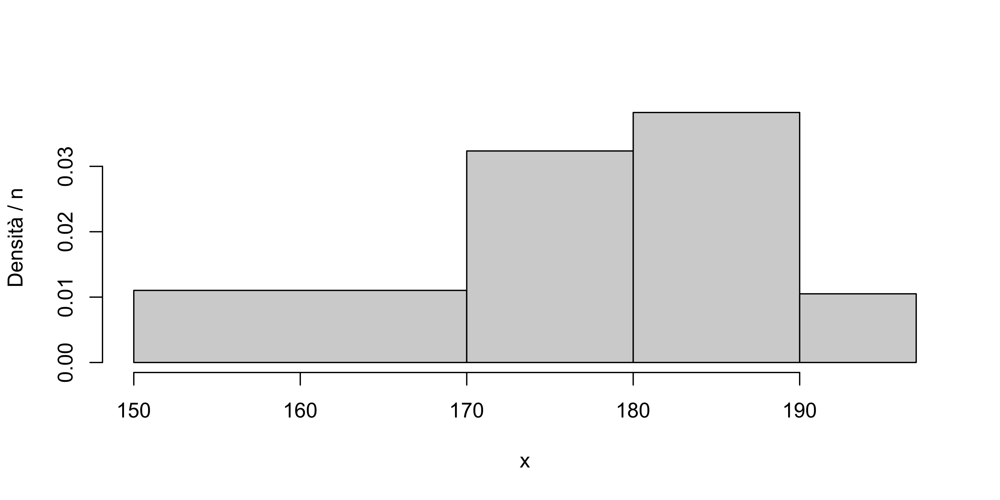

Statistica I
Esercitazione 3: variabilità, istogrammi, boxplot, simmetria, curtosi
Homepage
Alcuni dei problemi di questa esercitazione non sono stati svolti a lezione. Si consiglia agli studenti di provare a risolvere i problemi autonomamente.
Strani indici
Si dica se gli indici elencati di seguito possono o non possono essere interpretati come una misura di posizione oppure di variabilità di un certo insieme di dati tutti positivi, y_1, \dots, y_n. Il simbolo \mathcal{Q}_p indica il quantile p.
\frac{1}{n^2}\sum_{i=1}^n\sum_{j=1}^n(y_i - y_j).
\frac{1}{n^2}\sum_{i=1}^n\sum_{j=1}^n(y_i - y_j)^2.
\frac{1}{2n^2}\sum_{i=1}^n\sum_{j=1}^n|y_i - y_j|.
\exp\left\{\frac{1}{n}\sum_{i=1}^n\log{x_i}\right\}.
\mathcal{Q}_{0.5} - \mathcal{Q}_{0.25} + |\mathcal{Q}_{0.5} - \mathcal{Q}_{0.75}|
Tubi catodici
Una vecchia fabbrica di televisori produce due tipi di tubi catodici: il tipo A e il tipo B. I tubi catodici hanno tempi di durata media, rispettivamente di 1495 ore e 1875 ore e scarti quadratici medi rispettivamente di 280 ore e 310 ore. In generale, è preferibile il tubo catodico che ha la durata più alta e variabilità più bassa.
Quale dei due tubi catodici è preferibile?
Lampadine
Un’azienda produttrice di lampadine controlla la durata dei suoi prodotti facendo funzionare n = 200 lampadine ininterrottamente fino a che si rompono. A determinati istanti di tempo si effettua un controllo e si verifica quante in totale non sono più funzionanti. I dati sono riportati nella tabella seguente
| Tempo | 10 | 30 | 100 | 150 | 200 | 400 |
|---|---|---|---|---|---|---|
| Rotture cumulate | 2 | 20 | 40 | 80 | 120 | 170 |
Si noti che 30 lampadine non si sono mai rotte.
Si valuti la “durata media” e si dia un indice di posizione appropriato per sintetizzare la distribuzione delle durate.
Si calcoli un opportuno indice di variabilità.
Altezza delle persone
Rilevando in centrimetri la statura di n = 136 persone, si sono contate 30 persone con statura compresa tra i 150 e 170cm; 44 con statura tra 170 e 180; 52 tra 180 e 190 e 10 tra 190 e 197, che è la statura massima rilevata.
Si rappresentino i dati con un istogramma.
Moscerini della frutta
Un gruppo di ricercatori sta valutando la tossicità su D. melanogaster (moscerini della frutta) di un composto molecolare. I moscerini vengono divisi casualmente in 10 gruppi e vengono trattati col composto. Dopo 1 giorno si registra la percentuale di moscerini non sopravvissuti per l’eccessiva tossicità.
| Gruppo | 1 | 2 | 3 | 4 | 5 | 6 | 7 | 8 | 9 | 10 |
|---|---|---|---|---|---|---|---|---|---|---|
| Frazione di decessi | 0.38 | 0.32 | 0.59 | 0.58 | 0.41 | 0.87 | 0.54 | 0.4 | 0.42 | 0.4 |
Si individuino le distribuzioni di frequenze assolute cumulate, relative e relative cumulate della mortalità dei moscerini.
Si tracci il box-plot.
Si calcolino media e lo scarto quadratico medio.
Si calcoli un indice di variabilità robusto.